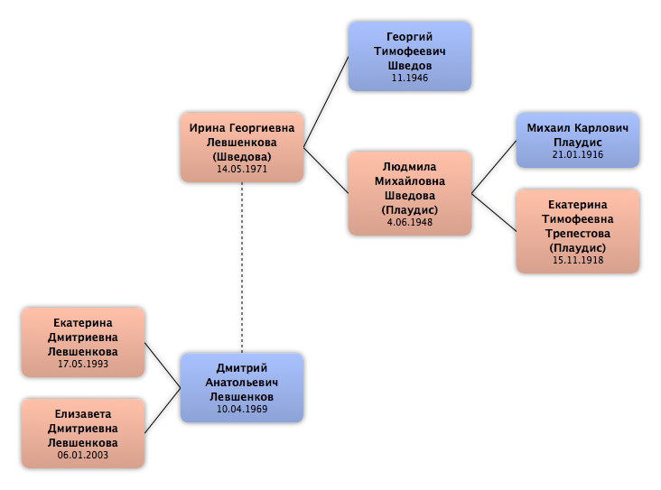

Домой
Домой
 Люди
Люди
 Семьи
Семьи
 Источники
Источники
 Диаграммы
Диаграммы
 Статистика
Статистика
Ирина Георгиевна Левшенкова

Контекст

Дополнительные имена
| Тип | Имя |
|---|---|
| Фамилия в браке | Шведова |
Родители
| Отец | Дата рождения | Мать | Дата рождения |
|---|---|---|---|
 Георгий Тимофеевич Шведов Георгий Тимофеевич Шведов
|
11.1946 |
Людмила Михайловна Шведова
|
4.06.1948 |
Родители и дети
| Партнёры | Дата рождения | Дети |
|---|---|---|
|
Дмитрий Анатольевич Левшенков
|
10.04.1969 |
Екатерина Дмитриевна Левшенкова
Елизавета Дмитриевна Левшенкова
|
События
| Тип события | Дата | Место | Описание |
|---|---|---|---|
| Рождение | 14.05.1971 |
Факты
Медиа

Примечание
Источники
Родство
| Имя | Степень родства | Дата рождения | Место рождения | Дата смерти | Место смерти |
|---|---|---|---|---|---|
| Партнёров | |||||
| Партнёр или муж | 10.04.1969 | ||||
| Дети | |||||
| Дочь | 17.05.1993 | ||||
| Дочь | 06.01.2003 | ||||
| Родителей | |||||
| Отец | 11.1946 | ||||
| Мать | 4.06.1948 | Ефимовский пос., Ленинградская обл, СССР | |||
| Дедушки и бабушки | |||||
| Дедушка | 21.01.1916 | 10.1989 | Бокситогорск, Ленинградская обл, Россия | ||
| Бабушка | 15.11.1918 | Ефимовский пос., Ленинградская обл, Россия | 03.2001 | Ефимовский пос., Ленинградская обл, Россия | |
| Прадедушка и прабабушка | |||||
| Прабабушка | 1953 | ||||
| Прадедушка | 1953 | ||||
| Прадедушка | |||||
| Прабабушка | 1887 | ||||
| Тёти и дяди | |||||
| Дядя | 27.09.1939 | 1989 | |||
| Дядя | 05.10.1946 | ||||
| Тётя | 13.05.1951 | Ленинград, СССР | 07.01.2009 | Санкт-Петербург, Россия | |
| Тётя | 03.1953 | Ефимовский пос., Ленинградская обл, СССР | 03.2009 | ||
| Тётя | 30.06.1956 | Ефимовский пос., Ленинградская обл, СССР | |||
| Тёти и дяди жены(мужа) | |||||
| Дядя (по браку) | 24.03.1949 | СССР | |||
| Двоюродные братья и сёстры | |||||
| Двоюродный брат | 1968 | ||||
| Двоюродная сестра | 11.02.1974 | Ленинград, СССР | |||
| Двоюродная сестра | 06.01.1975 | ||||
| Двоюродный брат | 1975 | ||||
| Двоюродная сестра | 25.04.1977 | Ленинград, СССР | |||
| Двоюродная сестра | 1977 | 1997 | |||
| Двоюродный брат | 1978 | 1998 | |||
| Двоюродный брат | 26.01.1979 | ||||
| Двоюродная сестра | 1982 | 2005 | |||
| Двоюродный брат | 30.08.1983 | ||||
| Двоюродные племянники (племянницы) | |||||
| Двоюродный племянник | 15.07.1995 | Санкт-Петербург, Россия | |||
| Двоюродный племянник | 10.05.2002 | ||||